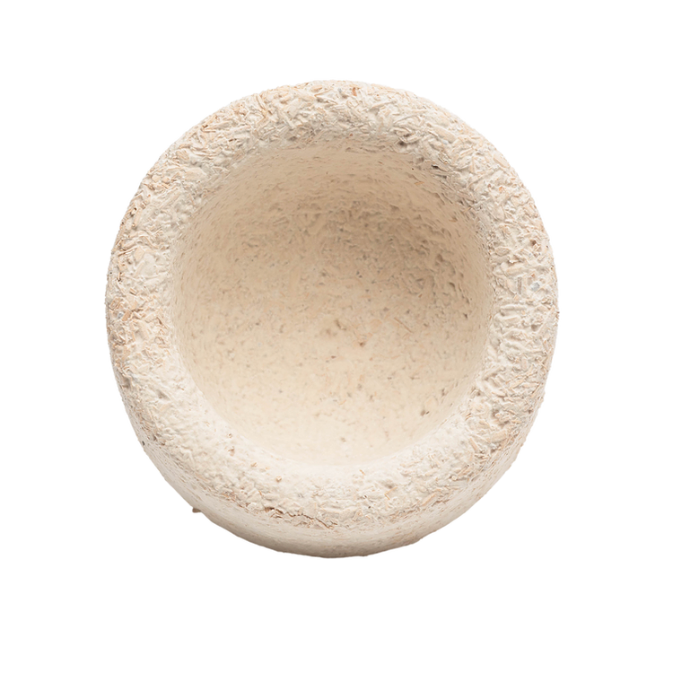

James Ferrier is CEO of BioFab, a biomaterial start-up using agricultural waste and mycelium to develop a breakthrough product for the construction and packaging industries.
BioFab’s goal is to significantly reduce the harm toxic materials are causing to the planet and encourage a world where waste streams regenerate, rather than destroy our natural environment.
In this edited conversation with Peter Green, James spoke about his experience running BioFab and gives some great advice for entrepreneurs.
How did you get from the initial idea for BioFab to where you are now?
Before BioFab I invested in my friend's hemp company called Hemp New Zealand. At this point I started learning more about the industry and I developed a real interest in finding industrial applications for hemp.
About six months after that investment, my interest in Mycelium grew when I went to a talk by Andreas Mershin, who is now our scientific advisor. He had come to New Zealand from MIT to discuss some of the technology he was working with. The talk touched on the various uses of the mushroom mycelium, from being potentially used to create homes on Mars to semi-permanent housing construction in Africa. I was fascinated. At the end of the talk, Amdreas mentioned that hemp was one of the best growing substrates for the mushroom. That's where it came together and, coupled with my background in sustainable packaging businesses, BioFab was created.
After this, we decided to partner with a company called Ecovative in the US who licensed us the technology to develop our business.

What challenges have you run into as CEO?
Early on we were faced with the issue of biosecurity. We couldn't import Ecovative's fungal species because of biosecurity laws in New Zealand and Australia. As a result, we ended up having to develop our own fungal species. In a way, I'm really glad for the existence of biosecurity rules because developing the fungus has become one of the core foundations of our business. It's put us in a unique position where we now work with the entire supply chain.
Have you run into any challenges relating to industry regulation?
With regards to production and producing the mycelium at scale, the commercial mushroom-growing industries had already solved a lot of problems to do with regulation. When evaluating regulation on our ideal substrate, hemp, the industry is continually growing and hopefully will continue to grow. If not, it's not so bad for us becuase hemp is not the only raw material we can use.
What's next for your team ?
We are finishing our first capital raise to build our first commercial-scale plant. We're hoping that that this will be done in the next four to six weeks.
How do you approach decision making at BioFab?
We have a great community both internally and externally. We've got a great team and, from an early stage, we had a governance board set up. We have meetings with them anywhere from one to three times a week.
We've also got our partnership with Ecovative, and we have a direct line to them if we ever have a problem or a question.
What advice would you give to your younger self or someone else starting out on this journey?
The first piece of advice is to really commit to starting. There's so many people that have great ideas but don't start. Quite often just taking that first step is free and will create some momentum.
Secondly, think about who you're going to go into business with. Try to go into business with people who could be your friends because teamwork is everything. An average idea can become successful with a great team.
Lastly, actively invest a lot of time, energy and money into looking after your brain, your mental health and your personal growth. Whether that's through meditation, courses or, say, sport. With a start-up you're going to be under extremely high stress at times. You have got to actively seek to restore your energy as burnout might hurt you and your business.

Interviewer: Peter Green